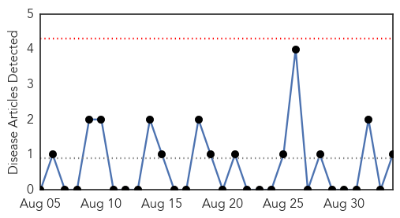
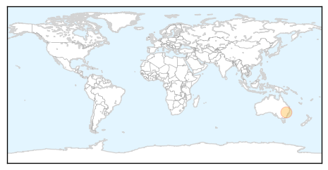

Swine Flu
30-Day Web Trend
0 alerts, 0 warnings

30-Day Twitter Trend
1 alerts, 0 warnings

Article Locations
Article Confidences

Top Articles:
Top Tweets:
-
No tweets found for Sep 03, 2014
Dengue Fever
30-Day Web Trend
0 alerts, 0 warnings

30-Day Twitter Trend
2 alerts, 0 warnings

Article Locations

Article Confidences

Top Articles:
- 0.992
- Tokyo Takes First Steps Against Mosquitos Carrying Dengue
- 0.981
- Rise in dengue triggers panic in Odisha
- 0.971
- Weekly dengue fever cases ...｜Society｜WCT
- 0.961
- Sanofi dengue vaccine shows considerable efficacy in trials
- 0.908
- Sanofi Pasteur's dengue vaccine candidate completes final landmark phase III
- 0.795
- Collector Meets Health Secretary
- 0.778
- Anti-dengue mosquito alert: Cleanliness Day on Sunday throughout the Punjab
- 0.741
- Final trial confirms efficacy of Sanofi's dengue vaccine
- 0.721
- Strive for a dengue-free Malaysia - Community
- 0.613
- Future of Sanofi dengue fever vaccine candidate hangs in balance over new results
- 0.581
- Experiments promising for dengue fever drug
Top Tweets:
- 0.692
- RT: NEWS SCAN: Caribbean chikungunya spike; Saudi MERS case; New dengue cases in Japan http://t.co/ivCYpeWsj1
- 0.570
- Flavivirus news: Dengue outbreak: City bitten - Deccan Chronicle: Dengue outbreak: City bittenD... http://t.co/c1I037w0lh pathogenposse